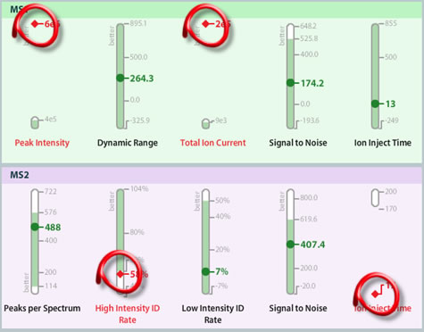
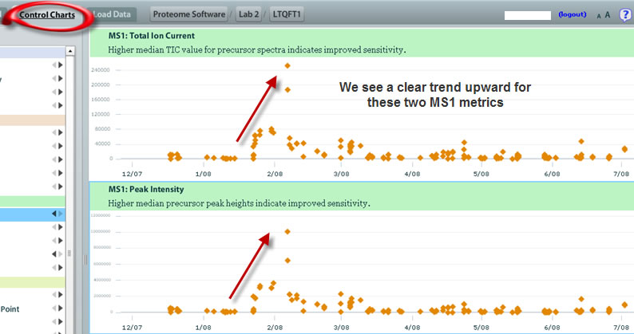
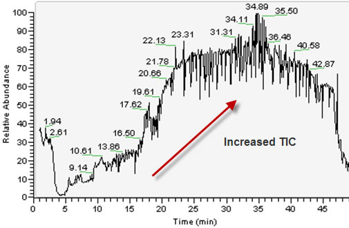

After the ions at the MS1 level come through, the methods described herein rely upon a second level of mass analysis to occur. This would be the MS2 level and is used to fragment ions further, so that database searches can be performed for protein identification. Problems can occur at each of these levels of ionization/mass analysis and often do. In the current example, we notice Peak Intensity and Total Ion Current at the MS1 level and High Intensity ID Rate and Ion Inject Time at the MS2 level:

For example, if the technician looks more closely at the MS1 metrics that were flagged, by clicking the Control Charts , you see why MassQC is flagging these runs. They are clearly going out of range, until finally they are very high and the instrument needs to be looked at closely:

If we take a look at the Total Ion Current for the flagged run, we clearly see that the run is bad. In this case, the technician might hypothesize that some contamination has occurred.

One possibility is that acetate cluster ions likely arose from placing a metallic filter in the chromatography system while using acetic acid in the running buffers. The series of ions builds slowly over a period of runs. The contaminate ions dominate the base peak chromatograms , as seen above.
This is the kind of problem that can grind a lab to a halt for a period of time. Expectedly, MassQC flags the problem as some of the metrics have varied wildly from their long-term averages.